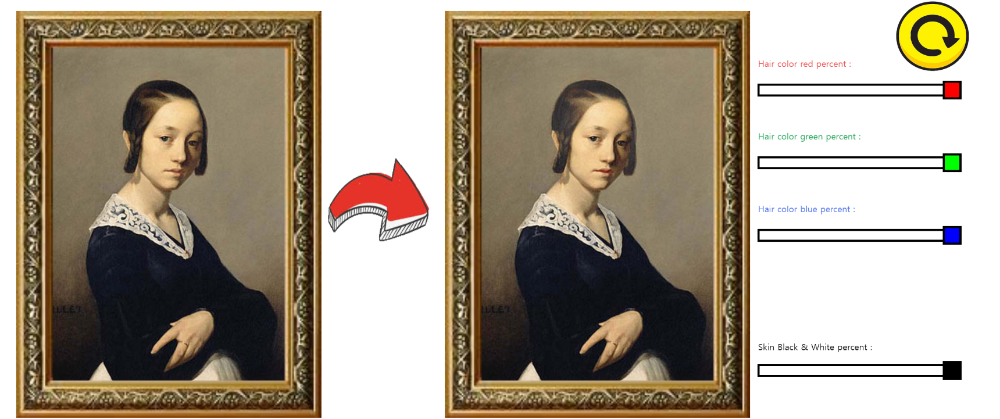
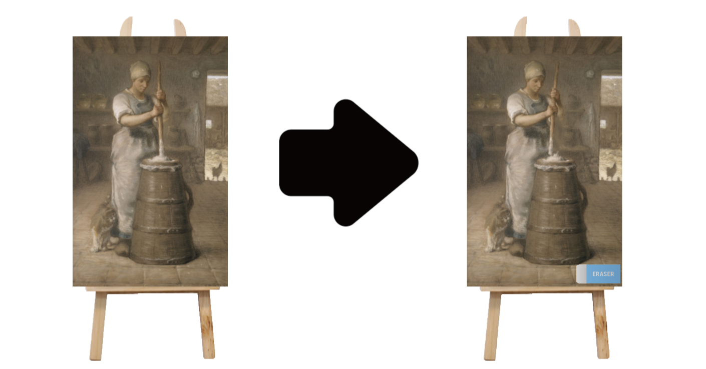
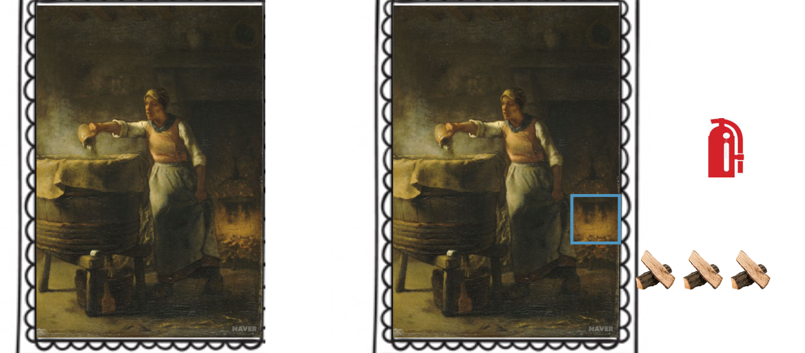

작품 연습
작품을 만드는 연습 과정에 대하여...

파르당부인의 초상
파르당부인의 초상을 할 때 기억나는 것 : 일단 마우스로 박스를 움직이고 그거에 맞게
수치를 정하고 대입하는 것을 적용 해낸것.
mouseX에서 첫 시작점까지의 값을 뺀 곳이 0이고
255까지 사각형을 그리고 255보다 커지면 255를 대입하여
더 커지지 않게 하였다.
restart버튼을 만들때 그 위치에 마우스가 올라가면 커지게 한것.
마우스가 그 범위로 가면 미리 선언해둔 변수를 이미지의
4번째 5번째 파라미터에 10씩 증가시켜준다

우유를 휘젓는 여인
우유를 휘젓는 여인을 할 때 기억나는 것 : 키보드의 입력 값을 받을 때 이미지를 바꾸는것
변수를 선언해서 입력을 받을 때마다 변수를 증가시키고
변수를 2로 나눈 나머지가 0이냐
1이냐를 기준으로 어떤 그림이 나올지 정함
얼룩은 우유가 담긴 통을
기준으로 그 주변 x,y좌표를
랜덤함수 안에 넣어 얼룩이 튀는
효과를 구현함

세탁하는 여인
세탁하는 여인을 할 때 기억나는 것 : 벽난로의 부분을 정하여 그부분의 x,y좌표가
장작의 x,y 좌표값과 비교하여 그부분에 부합하면
불이 더 타오르게 구현함.
메인페이지로